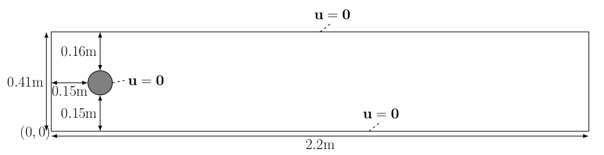

Test problem 2: Flow past a cylinder (DFG 2D-3 benchmark)
Contents
Test problem 2: Flow past a cylinder (DFG 2D-3 benchmark)#
Author: Jørgen S. Dokken
In this section, we will turn our attention to a slightly more challenging problem: flow past a cylinder. The geometry and parameters are taken from the DFG 2D-3 benchmark in FeatFlow.
To be able to solve this problem efficiently and ensure numerical stability, we will subsitute our first order backward difference scheme with a second order backward difference approximation, and use an explicit Adams-Bashforth approximation of the non-linear term.
Computationally demanding demo
This demo is computationally demanding, with a run-time up to 25 minutes, as it is using parameters from the DFG 2D-3 benchmark, which consists of 12800 time steps. It is adviced to download this demo and not run it in a browser. Please also see the last part of the tutorial on how to use mpirun to speedup the run-time of the program.
The computational geometry we would like to use is 
The kinematic velocity is given by \(\nu=0.001=\frac{\mu}{\rho}\) and the inflow velocity profile is specified as
which has a maximum magnitude of \(1.5\) at \(y=0.41/2\). We do not use any scaling for this problem since all exact parameters are known.
Mesh generation#
As in the Deflection of a membrane we use GMSH to generate the mesh. We fist create the rectangle and obstacle.
import gmsh
import numpy as np
import matplotlib.pyplot as plt
import tqdm.notebook
from mpi4py import MPI
from petsc4py import PETSc
from dolfinx.cpp.mesh import to_type, cell_entity_type
from dolfinx.fem import Constant, Function, FunctionSpace, assemble_scalar, dirichletbc, form, locate_dofs_topological, set_bc
from dolfinx.fem.petsc import apply_lifting, assemble_matrix, assemble_vector, create_vector, set_bc
from dolfinx.graph import create_adjacencylist
from dolfinx.geometry import BoundingBoxTree, compute_collisions, compute_colliding_cells
from dolfinx.io import (XDMFFile, cell_perm_gmsh, distribute_entity_data, extract_gmsh_geometry,
extract_gmsh_topology_and_markers, ufl_mesh_from_gmsh)
from dolfinx.mesh import create_mesh, meshtags_from_entities
from ufl import (FacetNormal, FiniteElement, Identity, Measure, TestFunction, TrialFunction, VectorElement,
as_vector, div, dot, ds, dx, inner, lhs, grad, nabla_grad, rhs, sym)
gmsh.initialize()
L = 2.2
H = 0.41
c_x = c_y =0.2
r = 0.05
gdim = 2
rank = MPI.COMM_WORLD.rank
if rank == 0:
rectangle = gmsh.model.occ.addRectangle(0,0,0, L, H, tag=1)
obstacle = gmsh.model.occ.addDisk(c_x, c_y, 0, r, r)
The next step is to subtract the obstacle from the channel, such that we do not mesh the interior of the circle.
if rank == 0:
fluid = gmsh.model.occ.cut([(gdim, rectangle)], [(gdim, obstacle)])
gmsh.model.occ.synchronize()
To get GMSH to mesh the fluid, we add a physical volume marker
fluid_marker = 1
if rank == 0:
volumes = gmsh.model.getEntities(dim=gdim)
gmsh.model.addPhysicalGroup(volumes[0][0], [volumes[0][1]], fluid_marker)
gmsh.model.setPhysicalName(volumes[0][0], fluid_marker, "Fluid")
To tag the different surfaces of the mesh, we tag the inflow (left hand side) with marker 2, the outflow (right hand side) with marker 3 and the fluid walls with 4 and obstacle with 5. We will do this by compute the center of mass for each geometrical entitiy.
inlet_marker, outlet_marker, wall_marker, obstacle_marker = 2, 3, 4, 5
inflow, outflow, walls, obstacle = [], [], [], []
if rank == 0:
boundaries = gmsh.model.getBoundary(volumes, oriented=False)
for boundary in boundaries:
center_of_mass = gmsh.model.occ.getCenterOfMass(boundary[0], boundary[1])
if np.allclose(center_of_mass, [0, H/2, 0]):
inflow.append(boundary[1])
elif np.allclose(center_of_mass, [L, H/2, 0]):
outflow.append(boundary[1])
elif np.allclose(center_of_mass, [L/2, H, 0]) or np.allclose(center_of_mass, [L/2, 0, 0]):
walls.append(boundary[1])
else:
obstacle.append(boundary[1])
gmsh.model.addPhysicalGroup(1, walls, wall_marker)
gmsh.model.setPhysicalName(1, wall_marker, "Walls")
gmsh.model.addPhysicalGroup(1, inflow, inlet_marker)
gmsh.model.setPhysicalName(1, inlet_marker, "Inlet")
gmsh.model.addPhysicalGroup(1, outflow, outlet_marker)
gmsh.model.setPhysicalName(1, outlet_marker, "Outlet")
gmsh.model.addPhysicalGroup(1, obstacle, obstacle_marker)
gmsh.model.setPhysicalName(1, obstacle_marker, "Obstacle")
In our previous meshes, we have used uniform mesh sizes. In this example, we will have variable mesh sizes to resolve the flow solution in the area of interest; close to the circular obstacle. To do this, we use GMSH Fields.
# Create distance field from obstacle.
# Add threshold of mesh sizes based on the distance field
# LcMax - /--------
# /
# LcMin -o---------/
# | | |
# Point DistMin DistMax
res_min = r / 3.7
res_max = 1.5 * r
if rank == 0:
gmsh.model.mesh.field.add("Distance", 1)
gmsh.model.mesh.field.setNumbers(1, "EdgesList", obstacle)
gmsh.model.mesh.field.add("Threshold", 2)
gmsh.model.mesh.field.setNumber(2, "IField", 1)
gmsh.model.mesh.field.setNumber(2, "LcMin", res_min)
gmsh.model.mesh.field.setNumber(2, "LcMax", res_max)
gmsh.model.mesh.field.setNumber(2, "DistMin", 4*r)
gmsh.model.mesh.field.setNumber(2, "DistMax", 8*r)
# We take the minimum of the two fields as the mesh size
gmsh.model.mesh.field.add("Min", 5)
gmsh.model.mesh.field.setNumbers(5, "FieldsList", [2])
gmsh.model.mesh.field.setAsBackgroundMesh(5)
Generating the mesh#
We are now ready to generate the mesh. However, we have to decide if our mesh should consist of triangles or quadrilaterals. In this demo, to match the DFG 2D-3 benchmark, we use quadrilateral elements. This is done by recombining the mesh, setting three gmsh options.
if rank == 0:
gmsh.option.setNumber("Mesh.RecombinationAlgorithm", 8)
gmsh.option.setNumber("Mesh.RecombineAll", 2)
gmsh.option.setNumber("Mesh.SubdivisionAlgorithm", 1)
gmsh.model.mesh.generate(gdim)
gmsh.model.mesh.optimize("Netgen")
Info : Meshing 1D...
Info : [ 0%] Meshing curve 5 (Ellipse)
Info : [ 20%] Meshing curve 6 (Line)
Info : [ 40%] Meshing curve 7 (Line)
Info : [ 60%] Meshing curve 8 (Line)
Info : [ 80%] Meshing curve 9 (Line)
Info : Done meshing 1D (Wall 0.00814531s, CPU 0.008581s)
Info : Meshing 2D...
Info : Meshing surface 1 (Plane, Frontal-Delaunay)
Info : Simple recombination completed (Wall 0.0270297s, CPU 0.023031s): 1180 quads, 354 triangles, 0 invalid quads, 0 quads with Q < 0.1, avg Q = 0.773076, min Q = 0.435836
Info : Done meshing 2D (Wall 0.0690858s, CPU 0.065333s)
Info : Refining mesh...
Info : Meshing order 2 (curvilinear on)...
Info : [ 0%] Meshing curve 5 order 2
Info : [ 20%] Meshing curve 6 order 2
Info : [ 40%] Meshing curve 7 order 2
Info : [ 50%] Meshing curve 8 order 2
Info : [ 70%] Meshing curve 9 order 2
Info : [ 90%] Meshing surface 1 order 2
Info : Surface mesh: worst distortion = 0.845684 (0 elements in ]0, 0.2]); worst gamma = 0.667609
Info : Done meshing order 2 (Wall 0.0102653s, CPU 0.010425s)
Info : Done refining mesh (Wall 0.0120062s, CPU 0.012318s)
Info : 5948 nodes 6119 elements
Info : Optimizing mesh (Netgen)...
Info : Done optimizing mesh (Wall 1.4e-06s, CPU 3e-06s)
Loading mesh and boundary markers#
As we have generated the mesh, we now need to load the mesh and corresponding facet markers into DOLFINx. To load the mesh, we follow the same structure as in Deflection of a membrane, with slight modifications to include the facet markers. To learn more about the specifics of the function below, see A GMSH tutorial for DOLFINx.
if MPI.COMM_WORLD.rank == 0:
# Get mesh geometry
x = extract_gmsh_geometry(gmsh.model)
# Get mesh topology for each element
topologies = extract_gmsh_topology_and_markers(gmsh.model)
# Get information about each cell type from the msh files
num_cell_types = len(topologies.keys())
cell_information = {}
cell_dimensions = np.zeros(num_cell_types, dtype=np.int32)
for i, element in enumerate(topologies.keys()):
properties = gmsh.model.mesh.getElementProperties(element)
name, dim, order, num_nodes, local_coords, _ = properties
cell_information[i] = {"id": element, "dim": dim, "num_nodes": num_nodes}
cell_dimensions[i] = dim
# Sort elements by ascending dimension
perm_sort = np.argsort(cell_dimensions)
# Broadcast cell type data and geometric dimension
cell_id = cell_information[perm_sort[-1]]["id"]
tdim = cell_information[perm_sort[-1]]["dim"]
num_nodes = cell_information[perm_sort[-1]]["num_nodes"]
cell_id, num_nodes = MPI.COMM_WORLD.bcast([cell_id, num_nodes], root=0)
if tdim - 1 in cell_dimensions:
num_facet_nodes = MPI.COMM_WORLD.bcast( cell_information[perm_sort[-2]]["num_nodes"], root=0)
gmsh_facet_id = cell_information[perm_sort[-2]]["id"]
marked_facets = np.asarray(topologies[gmsh_facet_id]["topology"], dtype=np.int64)
facet_values = np.asarray(topologies[gmsh_facet_id]["cell_data"], dtype=np.int32)
cells = np.asarray(topologies[cell_id]["topology"], dtype=np.int64)
cell_values = np.asarray(topologies[cell_id]["cell_data"], dtype=np.int32)
else:
cell_id, num_nodes = MPI.COMM_WORLD.bcast([None, None], root=0)
cells, x = np.empty([0, num_nodes], np.int64), np.empty([0, gdim])
cell_values = np.empty((0,), dtype=np.int32)
num_facet_nodes = MPI.COMM_WORLD.bcast(None, root=0)
marked_facets = np.empty((0, num_facet_nodes), dtype=np.int64)
facet_values = np.empty((0,), dtype=np.int32)
# Create distributed mesh
ufl_domain = ufl_mesh_from_gmsh(cell_id, gdim)
gmsh_cell_perm = cell_perm_gmsh(to_type(str(ufl_domain.ufl_cell())), num_nodes)
cells = cells[:, gmsh_cell_perm]
mesh = create_mesh(MPI.COMM_WORLD, cells, x[:, :gdim], ufl_domain)
tdim = mesh.topology.dim
fdim = tdim - 1
# Permute facets from MSH to DOLFINx ordering
# FIXME: Last argument is 0 as all facets are the same for tetrahedra
facet_type = cell_entity_type(to_type(str(ufl_domain.ufl_cell())), fdim, 0)
gmsh_facet_perm = cell_perm_gmsh(facet_type, num_facet_nodes)
marked_facets = np.asarray(marked_facets[:, gmsh_facet_perm], dtype=np.int64)
local_entities, local_values = distribute_entity_data(mesh, fdim, marked_facets, facet_values)
mesh.topology.create_connectivity(fdim, tdim)
adj = create_adjacencylist(local_entities)
# Create DOLFINx MeshTags
ft = meshtags_from_entities(mesh, fdim, adj, np.int32(local_values))
ft.name = "Facet tags"
Physical and discretization parameters#
Following the DGF-2 benchmark, we define our problem specific parameters
t = 0
T = 1 #8 # Final time
dt = 1/1600 # Time step size
num_steps = int(T/dt)
k = Constant(mesh, PETSc.ScalarType(dt))
mu = Constant(mesh, PETSc.ScalarType(0.001)) # Dynamic viscosity
rho = Constant(mesh, PETSc.ScalarType(1)) # Density
Reduced end-time of problem
In the current demo, we have reduced the run time to one second to make it easier to illustrate the concepts of the benchmark. By increasing the end-time T to 8, the runtime in a notebook is approximately 25 minutes. If you convert the notebook to a python file and use mpirun, you can reduce the runtime of the problem.
Boundary conditions#
As we have created the mesh and relevant mesh tags, we can now specify the function spaces V and Q along with the boundary conditions. As the ft contains markers for facets, we use this class to find the facets for the inlet and walls.
v_cg2 = VectorElement("CG", mesh.ufl_cell(), 2)
s_cg1 = FiniteElement("CG", mesh.ufl_cell(), 1)
V = FunctionSpace(mesh, v_cg2)
Q = FunctionSpace(mesh, s_cg1)
fdim = mesh.topology.dim - 1
# Define boundary conditions
class InletVelocity():
def __init__(self, t):
self.t = t
def __call__(self, x):
values = np.zeros((gdim, x.shape[1]),dtype=PETSc.ScalarType)
values[0] = 4 * 1.5 * np.sin(self.t * np.pi/8) * x[1] * (0.41 - x[1])/(0.41**2)
return values
# Inlet
u_inlet = Function(V)
inlet_velocity = InletVelocity(t)
u_inlet.interpolate(inlet_velocity)
inlet_facets = ft.indices[ft.values == inlet_marker]
bcu_inflow = dirichletbc(u_inlet, locate_dofs_topological(V, fdim, inlet_facets))
# Walls
u_nonslip = np.array((0,) *mesh.geometry.dim, dtype=PETSc.ScalarType)
wall_facets = ft.indices[ft.values == wall_marker]
bcu_walls = dirichletbc(u_nonslip, locate_dofs_topological(V, fdim, wall_facets), V)
# Obstacle
obstacle_facets = ft.indices[ft.values == obstacle_marker]
bcu_obstacle = dirichletbc(u_nonslip, locate_dofs_topological(V, fdim, obstacle_facets), V)
bcu = [bcu_inflow, bcu_obstacle, bcu_walls]
# Outlet
outlet_facets = ft.indices[ft.values == outlet_marker]
bcp_outlet = dirichletbc(PETSc.ScalarType(0), locate_dofs_topological(Q, fdim, outlet_facets), Q)
bcp = [bcp_outlet]
Variational form#
As opposed to Pouseille flow, we will use a Crank-Nicolson discretization, and an explicit Adams-Bashforth approximation. The first step can be written as
where we have used the two previous time steps in the temporal derivative for the velocity, and compute the pressure staggered in time, at the time between the previous and current solution. The second step becomes $\( -\nabla \phi = -\frac{1}{\delta t} \nabla \cdot u^* \qquad\text{in } \Omega, \)$
where \(p^{n+\frac{1}{2}}=p^{n-\frac{1}{2}} + \phi\). Finally, the third step is
We start by defining all the variables used in the variational formulations.
u = TrialFunction(V)
v = TestFunction(V)
u_ = Function(V)
u_.name = "u"
u_s = Function(V)
u_n = Function(V)
u_n1 = Function(V)
p = TrialFunction(Q)
q = TestFunction(Q)
p_ = Function(Q)
p_.name = "p"
phi = Function(Q)
Next, we define the variational formulation for the first step, where we have integrated the diffusion term, as well as the pressure term by parts. As we have used an explicit approximation of the non-linear term we only have to assemble the matrix once, but we have to save the two previous solutions.
f = Constant(mesh, PETSc.ScalarType((0,0)))
F1 = rho / k * dot(u - u_n, v) * dx
F1 += inner(1.5 * dot(u_n, nabla_grad(u_n)) - 0.5 * dot(u_n1, nabla_grad(u_n1)), v) * dx
F1 += 0.5 * mu * inner(grad(u+u_n), grad(v))*dx - dot(p_, div(v))*dx
F1 += dot(f, v) * dx
a1 = form(lhs(F1))
L1 = form(rhs(F1))
A1 = assemble_matrix(a1, bcs=bcu)
A1.assemble()
b1 = create_vector(L1)
Next we define the second step
a2 = form(dot(grad(p), grad(q))*dx)
L2 = form(-1/k * dot(div(u_s), q) * dx)
A2 = assemble_matrix(a2, bcs=bcp)
A2.assemble()
b2 = create_vector(L2)
We finally create the last step
a3 = form(dot(u, v)*dx)
L3 = form(dot(u_s, v)*dx - k * dot(nabla_grad(phi), v)*dx)
A3 = assemble_matrix(a3)
A3.assemble()
b3 = create_vector(L3)
As in the previous tutorials, we use PETSc as a linear algebra backend.
# Solver for step 1
solver1 = PETSc.KSP().create(mesh.comm)
solver1.setOperators(A1)
solver1.setType(PETSc.KSP.Type.BCGS)
pc1 = solver1.getPC()
pc1.setType(PETSc.PC.Type.JACOBI)
# Solver for step 2
solver2 = PETSc.KSP().create(mesh.comm)
solver2.setOperators(A2)
solver2.setType(PETSc.KSP.Type.MINRES)
pc2 = solver2.getPC()
pc2.setType(PETSc.PC.Type.HYPRE)
pc2.setHYPREType("boomeramg")
# Solver for step 3
solver3 = PETSc.KSP().create(mesh.comm)
solver3.setOperators(A3)
solver3.setType(PETSc.KSP.Type.CG)
pc3 = solver3.getPC()
pc3.setType(PETSc.PC.Type.SOR)
Verification of the implementation compute known physical quantities#
As a further verification of our implementation, we compute the drag and lift coefficients over the obstacle, defined as
where \(u_{t_S}\) is the tangential velocity component at the interface of the obstacle \(\partial\Omega_S\), defined as \(u_{t_S}=u\cdot (n_y,-n_x)\), \(U_{mean}=1\) the average inflow velocity, and \(L\) the length of the channel. We use UFL to create the relevant integrals, and assemble them at each time step.
n = -FacetNormal(mesh) # Normal pointing out of obstacle
dObs = Measure("ds", domain=mesh, subdomain_data=ft, subdomain_id=obstacle_marker)
u_t = inner(as_vector((n[1], -n[0])), u_)
drag = form(2 / 0.1 * (mu / rho * inner(grad(u_t), n) * n[1] - p_ * n[0]) * dObs)
lift = form(-2 / 0.1 * (mu / rho * inner(grad(u_t), n) * n[0] + p_ * n[1]) * dObs)
if rank == 0:
C_D = np.zeros(num_steps, dtype=PETSc.ScalarType)
C_L = np.zeros(num_steps, dtype=PETSc.ScalarType)
t_u = np.zeros(num_steps, dtype=np.float64)
t_p = np.zeros(num_steps, dtype=np.float64)
We will also evaluate the pressure at two points, on in front of the obstacle, \((0.15, 0.2)\), and one behind the obstacle, \((0.25, 0.2)\). To do this, we have to find which cell is containing each of the points, so that we can create a linear combination of the local basis functions and coefficients.
tree = BoundingBoxTree(mesh, mesh.geometry.dim)
points = np.array([[0.15, 0.2, 0], [0.25, 0.2, 0]])
cell_candidates = compute_collisions(tree, points)
colliding_cells = compute_colliding_cells(mesh, cell_candidates, points)
front_cells = colliding_cells.links(0)
back_cells = colliding_cells.links(1)
if rank == 0:
p_diff = np.zeros(num_steps, dtype=PETSc.ScalarType)
Solving the time-dependent problem#
Stability of the Navier-Stokes equation
Note that the current splitting scheme has to fullfil the a Courant–Friedrichs–Lewy condition. This limits the spatial discretization with respect to the inlet velocity and temporal discretization.
Other temporal discretization schemes such as the second order backward difference discretization or Crank-Nicholson discretization with Adams-Bashforth linearization are better behaved than our simple backward differnce scheme.```
As in the previous example, we create output files for the velocity and pressure and solve the time-dependent problem. As we are solving a time dependent problem with many time steps, we use the tqdm-package to visualize the progress. This package can be install with pip3.
xdmf = XDMFFile(MPI.COMM_WORLD, "dfg2D-3.xdmf", "w")
xdmf.write_mesh(mesh)
xdmf.write_function(u_, t)
xdmf.write_function(p_, t)
progress = tqdm.notebook.tqdm(desc="Solving PDE", total=num_steps)
# If running this as a python script, you should use the Progressbar command below
# progress = tqdm.tqdm(desc="Solving PDE", total=num_steps)
for i in range(num_steps):
progress.update(1)
# Update current time step
t += dt
# Update inlet velocity
inlet_velocity.t = t
u_inlet.interpolate(inlet_velocity)
# Step 1: Tentative veolcity step
with b1.localForm() as loc:
loc.set(0)
assemble_vector(b1, L1)
apply_lifting(b1, [a1], [bcu])
b1.ghostUpdate(addv=PETSc.InsertMode.ADD_VALUES, mode=PETSc.ScatterMode.REVERSE)
set_bc(b1, bcu)
solver1.solve(b1, u_s.vector)
u_s.x.scatter_forward()
# Step 2: Pressure corrrection step
with b2.localForm() as loc:
loc.set(0)
assemble_vector(b2, L2)
apply_lifting(b2, [a2], [bcp])
b2.ghostUpdate(addv=PETSc.InsertMode.ADD_VALUES, mode=PETSc.ScatterMode.REVERSE)
set_bc(b2, bcp)
solver2.solve(b2, phi.vector)
phi.x.scatter_forward()
p_.vector.axpy(1, phi.vector)
p_.x.scatter_forward()
# Step 3: Velocity correction step
with b3.localForm() as loc:
loc.set(0)
assemble_vector(b3, L3)
b3.ghostUpdate(addv=PETSc.InsertMode.ADD_VALUES, mode=PETSc.ScatterMode.REVERSE)
solver3.solve(b3, u_.vector)
u_.x.scatter_forward()
# Write solutions to file
xdmf.write_function(u_, t)
xdmf.write_function(p_, t)
# Update variable with solution form this time step
with u_.vector.localForm() as loc_, u_n.vector.localForm() as loc_n, u_n1.vector.localForm() as loc_n1:
loc_n.copy(loc_n1)
loc_.copy(loc_n)
# Compute physical quantities
# For this to work in paralell, we gather contributions from all processors
# to processor zero and sum the contributions.
drag_coeff = MPI.COMM_WORLD.gather(assemble_scalar(drag), root=0)
lift_coeff = MPI.COMM_WORLD.gather(assemble_scalar(lift), root=0)
p_front = None
if len(front_cells) > 0:
p_front = p_.eval(points[0], front_cells[:1])
p_front = MPI.COMM_WORLD.gather(p_front, root=0)
p_back = None
if len(back_cells) > 0:
p_back = p_.eval(points[1], back_cells[:1])
p_back = MPI.COMM_WORLD.gather(p_back, root=0)
if rank == 0:
t_u[i] = t
t_p[i] = t-dt/2
C_D[i] = sum(drag_coeff)
C_L[i] = sum(lift_coeff)
# Choose first pressure that is found from the different processors
for pressure in p_front:
if pressure is not None:
p_diff[i] = pressure[0]
break
for pressure in p_back:
if pressure is not None:
p_diff[i] -= pressure[0]
break
# Close xmdf file
xdmf.close()
Verification using data from FEATFLOW#
As FEATFLOW has provided data for different discretization levels, we compare our numerical data with the data provided using matplotlib.
if rank == 0:
num_velocity_dofs = V.dofmap.index_map_bs * V.dofmap.index_map.size_global
num_pressure_dofs = Q.dofmap.index_map_bs * V.dofmap.index_map.size_global
turek = np.loadtxt("bdforces_lv4")
turek_p = np.loadtxt("pointvalues_lv4")
fig = plt.figure(figsize=(25,8))
l1 = plt.plot(t_u, C_D, label=r"FEniCSx ({0:d} dofs)".format(num_velocity_dofs+num_pressure_dofs),linewidth=2)
l2 = plt.plot(turek[1:,1], turek[1:,3], marker="x", markevery=50,
linestyle="", markersize=4, label="FEATFLOW (42016 dofs)")
plt.title("Drag coefficient")
plt.grid()
plt.legend()
plt.savefig("drag_comparison.png")
fig = plt.figure(figsize=(25,8))
l1 = plt.plot(t_u, C_L, label=r"FEniCSx ({0:d} dofs)".format(
num_velocity_dofs+num_pressure_dofs),linewidth=2)
l2 = plt.plot(turek[1:,1], turek[1:,4], marker="x", markevery=50,
linestyle="", markersize=4, label="FEATFLOW (42016 dofs)")
plt.title("Lift coefficient")
plt.grid()
plt.legend()
plt.savefig("lift_comparison.png")
fig = plt.figure(figsize=(25,8))
l1 = plt.plot(t_p, p_diff, label=r"FEniCSx ({0:d} dofs)".format(num_velocity_dofs+num_pressure_dofs),linewidth=2)
l2 = plt.plot(turek[1:,1], turek_p[1:,6]-turek_p[1:,-1], marker="x", markevery=50,
linestyle="", markersize=4, label="FEATFLOW (42016 dofs)")
plt.title("Pressure difference")
plt.grid()
plt.legend()
plt.savefig("pressure_comparison.png")
We observe an offset in amplitude. This is due to the reduced number of degrees of freedom compared to FEATFLOW. If we change the parameters res_min to r/5, and res_max to r, we can obtain a result closer to the FEATFLOW benchmark. It is recommended to convert the notebook to a python-script using nbconvert and using mpirun -n 4 python3 ns_code2.py to run the python program distributed over 4 processors.